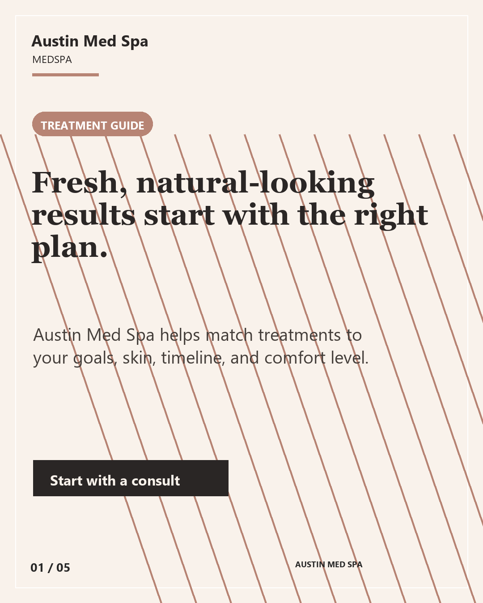
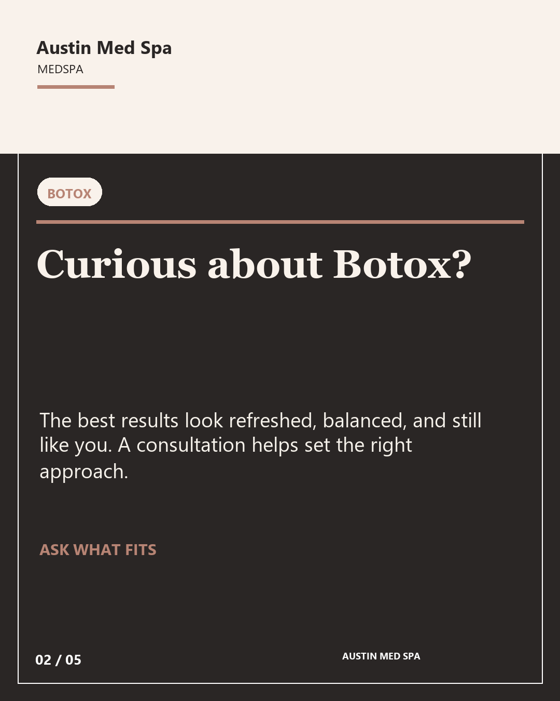
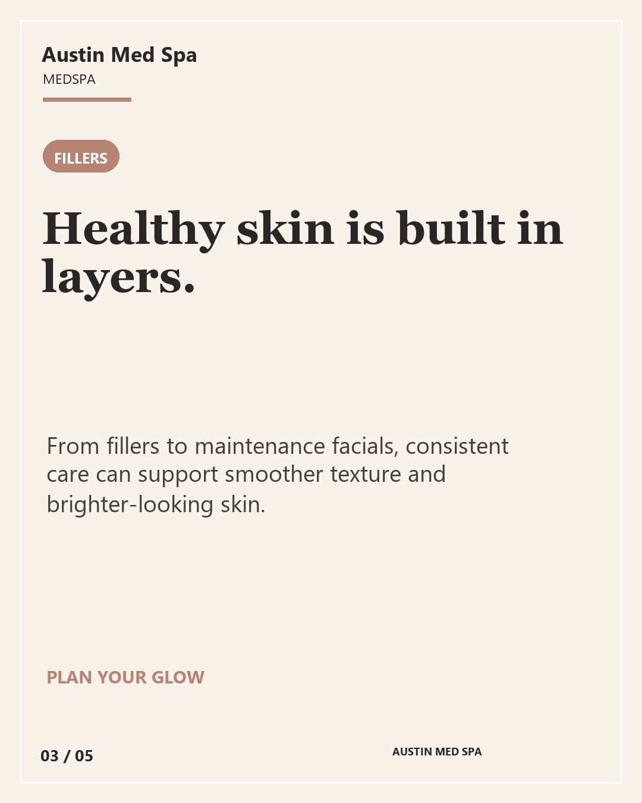
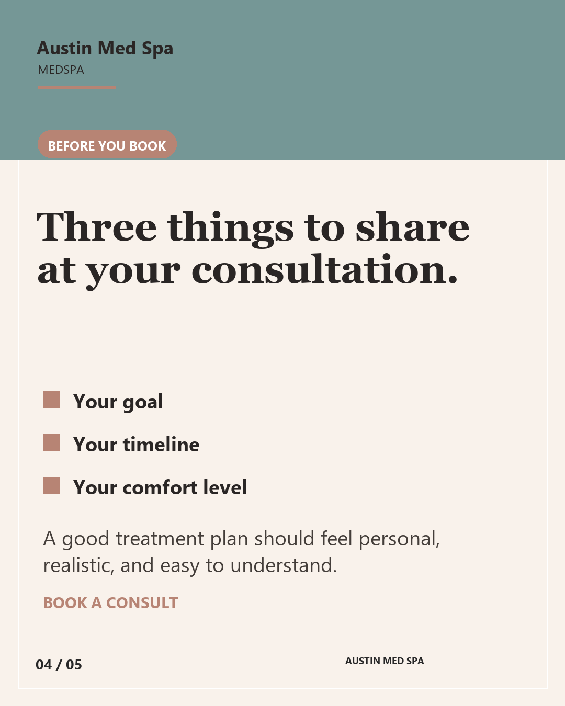
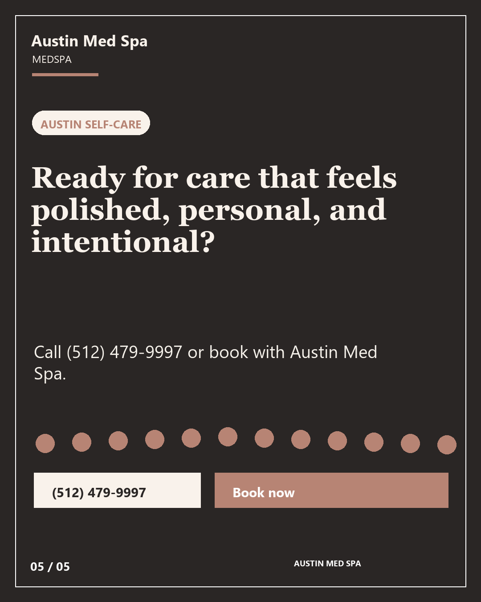

Austin Med Spa
carousel sample
A 5-post sample social carousel written as if it were ready for Austin Med Spa's own audience. The direction uses service language and visual cues from the business, then adapts cleanly for TikTok, Instagram, YouTube Shorts, and Facebook.




